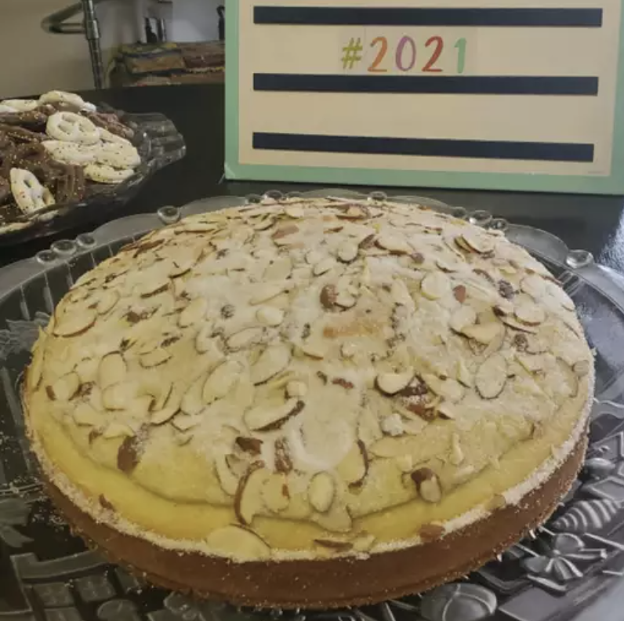

Greek New Years Cake

Description
Traditional Greek New Years Day bread. Served as a coffee cake for breakfast. Also the person who receives the quarter inside gets good luck for 1 year!
Ingredients
- 1 cup butter
- 2 cups white sugar
- 3 cups all-purpose flour
- 6 eggs
- 2 teaspoons baking powder
- 1 cup warm milk (110 degrees F/45 degrees C)
- ½ teaspoon baking soda
- ¼ cup blanched slivered almonds
- 2 tablespoons white sugar